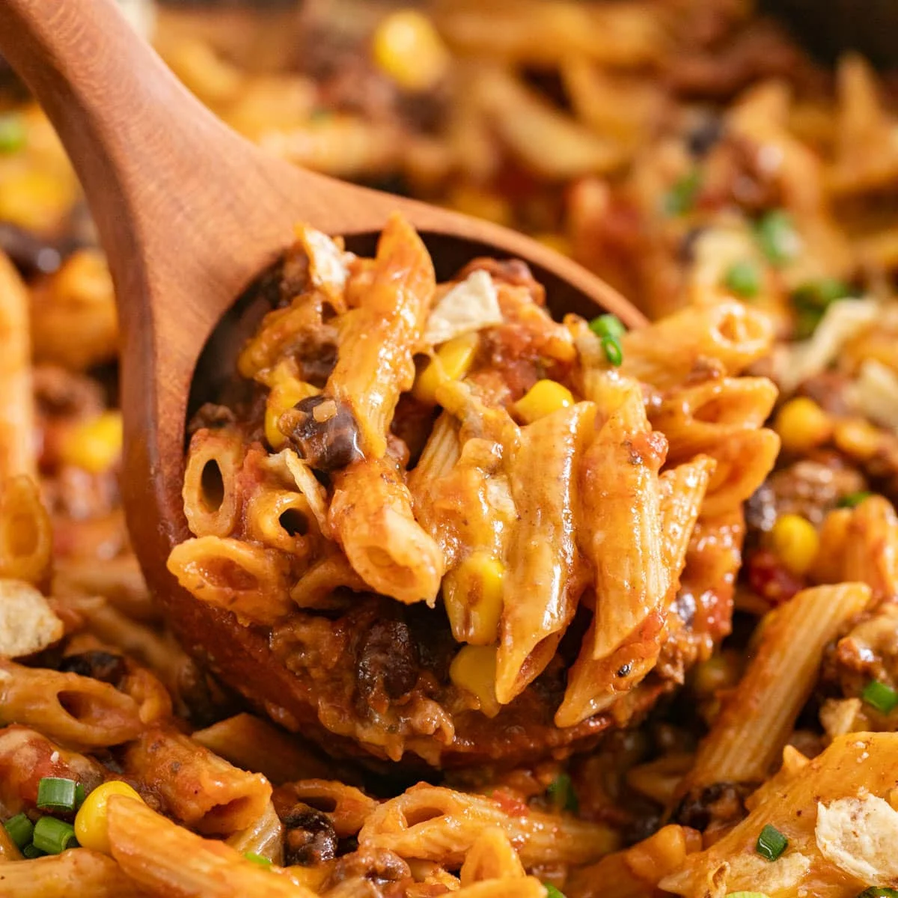

Odin Recipes: Taco Pasta
Home
Chicken Tandoori
Taco Pasta

Description: A tasty alternative to tortilla tacos!
Ingredients
- 400g chicken mince
- Pasta
- Creamcheese
- Sour Cream
- Taco seasoning
- Cheese (for topping)
- Start by boiling water for the pasta
- Heat the chicken mince in a pan over medium heat, breaking it up as it cooks.
- Cook the pasta according to the package instructions until it's al dente.
- WOnce the chicken mince is fully cooked, add the cream cheese and stir until it’s well combined.
- Add the sour cream and mix until smooth.
- When the sour cream is fully incorporated and the pasta is cooked, combine everything in an oven-safe dish.
- Sprinkle cheese on top of the mixture.
- Place the dish in the oven and bake until the cheese is melted and golden.
- Dinner is ready to be served!